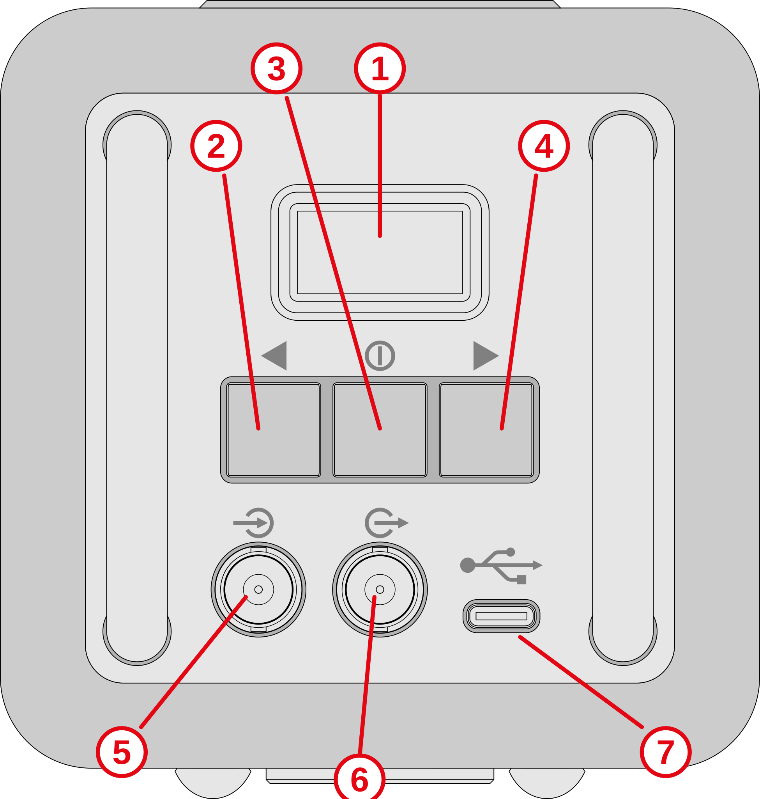
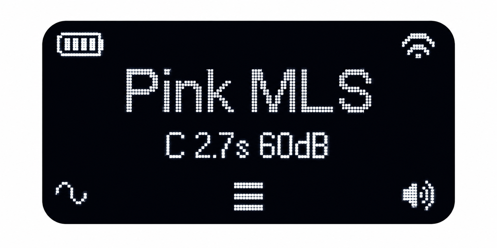

Echo 2
The Echo 2 is a portable acoustic signal source intended for speech intelligibility measurements. It is the successor to the B&K 4720 Speech Source (Echo). The most important changes from the earlier model are an improved loudspeaker supporting a wider range of signals, a calibrated STIPA signal, advanced functionality supported by a user-friendly menu system, and WiFi based remote control.
The Echo 2 is designed to be used with the Dirac acoustics measurement software.
Main functions
- Calibrated signal playback (PMLS, ESweep, STIPA, Speech)
- User signal playback
- BNC line input and output support
- Wi‑Fi networking
- Remote control
User interface

| Function | |
|---|---|
| 1 | OLED Display |
| 2 | Left button - Signal setup |
| 3 | Middle button - Menu |
| 4 | Right button - Start/stop playback |
| 5 | BNC line level input |
| 6 | BNC line level output |
| 7 | USB-C power input |
Display

The home page shows the battery state (upper left), Wifi state (upper right), selected signal (center), and icons for the three buttons.